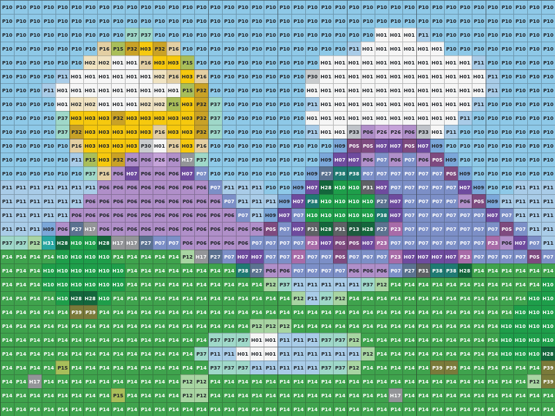

あなたの写真を、本当に作れるビーズ図案に
スライダーをドラッグして見比べてください。これはモックアップではなく、このツールが実際に作った図案です — 40 × 40 ビーズ · 21 色 · 1,600 個、正確な購入リスト付き。

 写真
図案
写真
図案
- ✓ 登録不要
- ✓ 100%ブラウザ内で動作 — 写真はアップロードされません
- ✓ 無料でスタート
1 写真を選ぶ
ここに画像をドロップ、またはタップして選択
PNG、JPG、WebP対応。シンプルでコントラストの強い画像が最適です。
作例 — このツールの実際の出力
下の図案はすべて、隣の画像からこのジェネレーターが実際に生成したものです。 見たままが手に入ります：同じ色、同じコード、同じ個数。
元の画像
図案💡 ペットのポートレートや顔には 幅40ビーズ以上を — 目、ひげ、毛並みの陰影には余分な精細さが必要です。
 元の画像
元の画像
図案💡 風景は細部が多いジャンルです。空、山、水などの大きな形は 幅40でもよく読み取れます。写真のような風景には、もっと幅を（ProまたはStudio）。
 元の画像
元の画像 図案
図案💡 無地の背景に大胆な被写体ひとつ、が一番の近道 — 小さい幅でもはっきり仕上がります。
 元の画像
元の画像 図案
図案💡 ロゴ、アイコン、漫画風アートはほぼどんなサイズでもきれいに変換できます — フラットな色と太い輪郭はビーズに最適です。
サイズガイド — 「幅」の本当の意味
設定する幅は、横方向のビーズ数です。標準のミディビーズは1個 5 mm なので、 始める前に完成サイズが簡単に計算できます：
| 設定する幅 | 完成サイズ* | 必要なビーズ† | 精細さ | おすすめ用途 |
|---|---|---|---|---|
| 20 ビーズ | ≈ 10 cm (4″) | ≈ 400 | 粗め — 大きな形のみ | キーホルダー、チャーム、マグネット |
| 29 ビーズ | ≈ 14.5 cm (5.7″) | 841 | シンプルな絵柄なら鮮明 | 標準ペグボードちょうど1枚 — コースター、デスク小物 |
| 48 ビーズ | ≈ 24 cm (9.4″) | ≈ 2,300 | 良好 — ポートレートも可 | 小さな壁飾り、額入りギフト （無料プランの上限） |
| 100 ビーズ | ≈ 50 cm (20″) | ≈ 10,000 | 写真のような精細さ | 大きな壁飾り （Pro） |
| 200 ビーズ | ≈ 100 cm (39″) | ≈ 40,000 | 最大の精細さ | ポスターサイズの作品 （Studio） |
* 横幅のサイズです。高さは写真の比率に従います。 † 正方形で全面を埋めた場合の目安 — 正確な個数は、作る図案ごとの購入リストに表示されます。
💡 経験則：図案が小さいほど、写真は大胆に — 大きな被写体ひとつと 強いコントラスト。幅100で見事な細かい写真も、幅20ではぐちゃぐちゃになります。
ステップガイド — 写真から完成まで
アイロンビーズは初めて？ この5ステップで失敗しません。
1 良い写真を選ぶ
被写体がひとつはっきりしていて、背景がシンプルで、コントラストの強い画像を選びましょう。 顔、ペット、ロゴ、漫画風アートが最適です。細部だらけのごちゃごちゃした場面は ビーズサイズでは溶けてしまいます — 写真が混み合っている場合は、まず被写体に寄って切り抜いてください。

2 幅を設定する
幅は完成品の横方向のビーズ数です。高さは写真に合わせて自動で決まります。 ビーズが多いほど精細になりますが、ビーズも時間もコストも増えます。目安： キーホルダーは幅20〜30、コースターはペグボード1枚でちょうど29、 デスク小物は40〜60、壁飾りは80以上。完成サイズは上のサイズガイドをご覧ください。

3 図案を読む
1マスが1ビーズです。 各マスに印刷されたコード （P01 のようなもの）がそのビーズの色コードで、購入リストの コードと同じです。5ビーズごとの太線のおかげで、1つずつではなく 5つずつ数えられます。グリッド線とコードは図案の上でオン／オフできます。

4 リストでビーズを買う
図案の下には購入リストがあります：すべての色についてコード、名前、 正確な個数、ビーズの総数、標準29 × 29ペグボードが何枚必要か。 各色とも約 10% 多めに買ってください — ビーズは必ず何個か転がっていきます。

5 ダウンロード、印刷、制作
図案をPNGでダウンロードして画面を見ながら作るか、印刷してください。 印刷時は 100%／「実際のサイズ」 を選んでください —「ページに合わせる」は グリッドを縮小し、ペグボードと合わなくなります。StudioプランのPDFボードシートは 大きな図案をペグボード1枚＝1ページに分割し、各ページに行列番号が付きます。

🏁 仕上げ：アイロンがけ
すべてのビーズを置き終えたら、クッキングシート（アイロン用ペーパー）をかぶせ、 中温のアイロンをゆっくり円を描くように動かし、ビーズの頭が溶けてくっつくまでかけます。 平らなまま冷ましてください — 重い本を乗せると反りを防げます。工程はこれだけ： 置く、アイロンをかける、冷ます、完成。
できること
アイロンビーズ図案メーカーは、あらゆる画像をそのまま作れるアイロンビーズ図案に変換します — ペグボードで見ながら作るあの図案が、数秒で生成されます。
- 写真 → 図案、自動で。 画像をアップロードすれば、すべてのピクセルが最も近いビーズ色にマッチします — ピクセル単位の手作業は不要です。
- 本物の64色ビーズパレット。 色は標準のPerler／Hamaパレットから選ばれ、それぞれに色コードと名前（H05 レッドなど）が付き、知覚的（Lab）距離でマッチングするため、数値だけでなく見た目も正確です。
- ビーズ購入リスト。 すべての色について正確な個数 — コードごとに何個必要か — とビーズ総数が分かります。
- ペグボードの見積もり。 完成品に標準29×29ペグボードが何枚必要か分かります。
- ダウンロードできる図案。 完成した図案を、グリッド線と全マスの色コード入りPNGとして書き出し、そのまま作れます。
- 100%プライベート。 すべてブラウザ内でローカルに動作します。写真がサーバーにアップロードされることは決してありません。
- 3つのプラン。 無料プランは幅48ビーズまで、基本パレットと透かし入り書き出しに対応。ProとStudioは幅の上限を引き上げ、フルパレット、CSVビーズリスト、印刷用PDFボードシート、一括変換を解放します — 各プランの内容は下の料金をご覧ください。
- セルをクリックして編集。自動で選ばれた色が気に入らなければ、好きなセルを手作業で塗り替えできます。色を選んでセルをタップするだけ。ビーズ数は編集に合わせて更新され、「元に戻す」（Ctrl+Z）で変更をさかのぼれます。
- SVGとスプレッドシートのエクスポート。ProとStudioでは、図案をデザインツール向けのスケーラブルなSVGとして、ビーズリストをCSVに加えてXLSXとしてもダウンロードできます。
使い方
- 1写真を選ぶ
PNG、JPG、WebPをドロップ。シンプルでコントラストの強い画像が最適です。 - 2幅を設定する
完成品の幅（ビーズ数）を選ぶだけ — 高さは自動で決まります。 - 3図案を受け取る
色コード付きの図案を確認し、色ごとの個数をチェックして、PNGをダウンロード。
料金
まずは無料で。もっと大きな図案、フルカラーパレット、 印刷して作れるファイルが必要になったらアップグレード。
無料プラン
$0
- 図案は幅 48 ビーズまで
- 基本 64色パレット（Perler／Hamaコード）
- ページ上の図案で個数を確認
- 小さな透かし入りのPNG書き出し
- アカウント不要、ずっと使えます
- セル編集 — どのビーズも手作業で塗り替え可能
Pro
$4.99/month
- 図案は幅 120 ビーズまで
- フル100色パレット（Perler + Hama + Artkal）
- 透かしなし、高解像度PNG書き出し
- ビーズリストを ダウンロード可能なCSV で — 印刷できる購入リスト
- 無料プランのすべてを含む
- SVG図案エクスポート＋ビーズリスト CSV / XLSX
Studio
$9.99/month
- 図案は幅 200 ビーズまで
- PDFボードシート — ペグボードごとにページ分割、印刷用の行列座標付き
- 一括変換 — 複数の写真をまとめて変換
- 作成した図案の 商用ライセンス
- Proのすべてを含む
キーはこのデバイスにのみ保存され、プランは即座に有効化されます。
よくある質問
ビーズとペグボードはどれくらい必要ですか？
図案の下の購入リストが、すべての色を正確に数え、ビーズ総数と標準29 × 29ペグボードの 必要枚数も示します。たとえば上の猫の図案は21色で1,600個、ペグボード4枚が必要です。 ヒント：各色とも約10%多めに買ってください — ビーズは必ず何個か転がっていきます。
写真はサーバーにアップロードされますか？
いいえ。すべてブラウザ内でローカルに動作します — 写真がデバイスの外に出ることはなく、 何も保存されず、アカウントもありません。タブを閉じれば消えます。
無料プラン、Pro、Studioの違いは？
無料プラン：幅48ビーズまで、基本64色パレット、小さな透かし入りのPNG書き出し。 Pro（$4.99/月）：幅120まで、フル100色パレット、透かしなし書き出し、ダウンロード可能なCSVビーズリスト。 Studio（$9.99/月）：幅200まで、印刷用PDFボードシート、一括変換、商用ライセンス。 完全な比較は上の料金をご覧ください。
ダウンロードしたPNGに透かしがあるのはなぜ？
無料プランの書き出しには、ツールを見つけてもらえるよう、下部に小さな 「Made with Bead Pattern Maker」の帯が入ります。ProとStudioの書き出しは完全な無地です。
印刷したグリッドがペグボードと合いません。何が問題ですか？
プリンターがページを拡大縮小しています。100%／「実際のサイズ」 で再印刷し、 「ページに合わせる」をオフにしてください — 印刷された1マスが1ビーズと一致しなければなりません。 あるいは画面を見て作るか、StudioのPDFボードシート（1ページ＝ペグボード1枚、行列番号付き）を使ってください。
スマートフォンでも使えますか？
はい — モダンなモバイルブラウザならどれでも動作し、アプリのようにインストールもできます （「ホーム画面に追加」を探してください）。その後はオフラインでも使えます。 写真はパソコンと同じく、スマートフォンの中に留まります。
アカウント登録は必要ですか？
不要です。アカウントもインストールもなし——ページを開けばすぐ使えます。アップグレードしても、ライセンスキーはあなたの端末にだけ保存されます。
どのブランドのビーズに対応していますか？
色見本は Perler / Hama の標準色番号に沿っています。各色に色番号と名前（例：H05 Red）が付くので、図案どおりに買い揃えられます。
作った作品を販売できますか？
Studioプランなら可能です。商用ライセンスが含まれます。FreeとProは個人利用向けです。
ツールが選んだ色を直せますか？
はい。図案の下でパレットの色を選び、変えたいセルをタップしてください。消しゴムでセルを空に戻すこともできます。買い物リストは編集のたびに再計算され、「元に戻す」で変更をさかのぼれます。